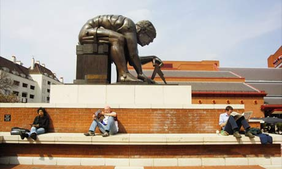
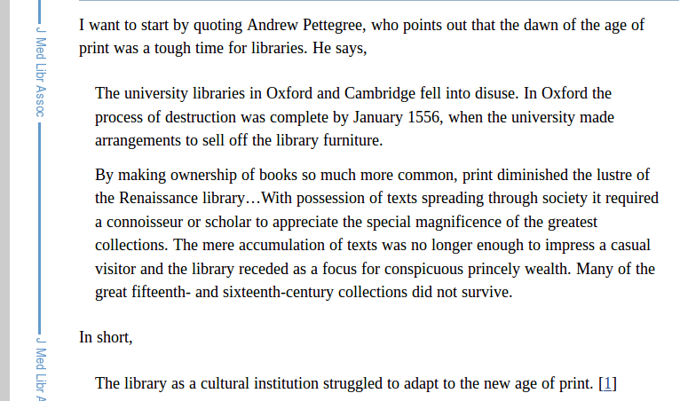
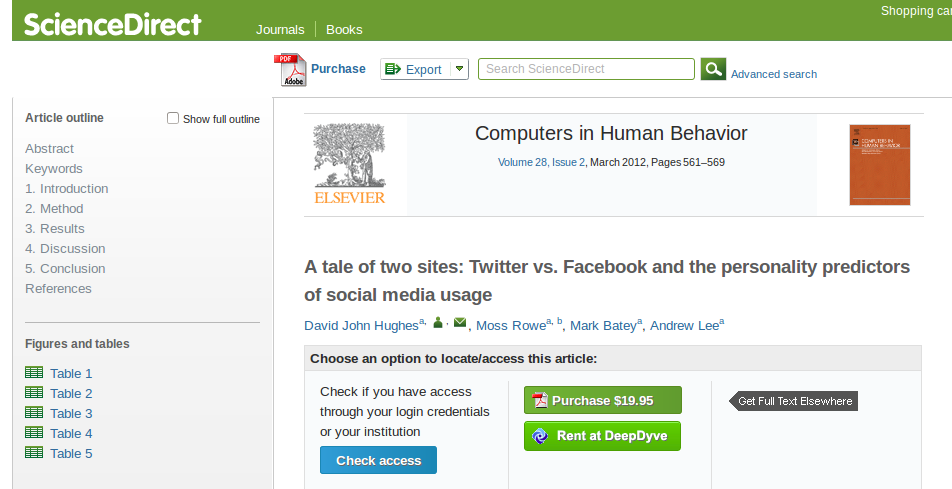
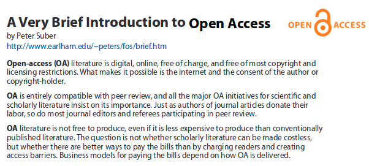
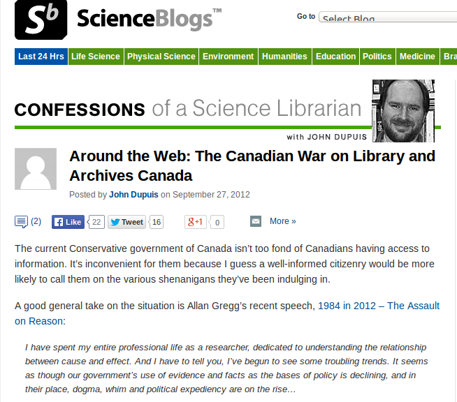

Standing on the Shoulders of Giants: The British Library

Transactions of the Royal Society, 1665
Libraries struggled with printed books

Reading this paper's bibliography would cost $704.15 USD

Open Access Leads to Public Access and Understanding

The War on Canadian Libraries

The future is what we create in the present.
Investing in libraries means that future generations can see further than they can do today.
Thank you.
Mita Williams / aedileworks.com